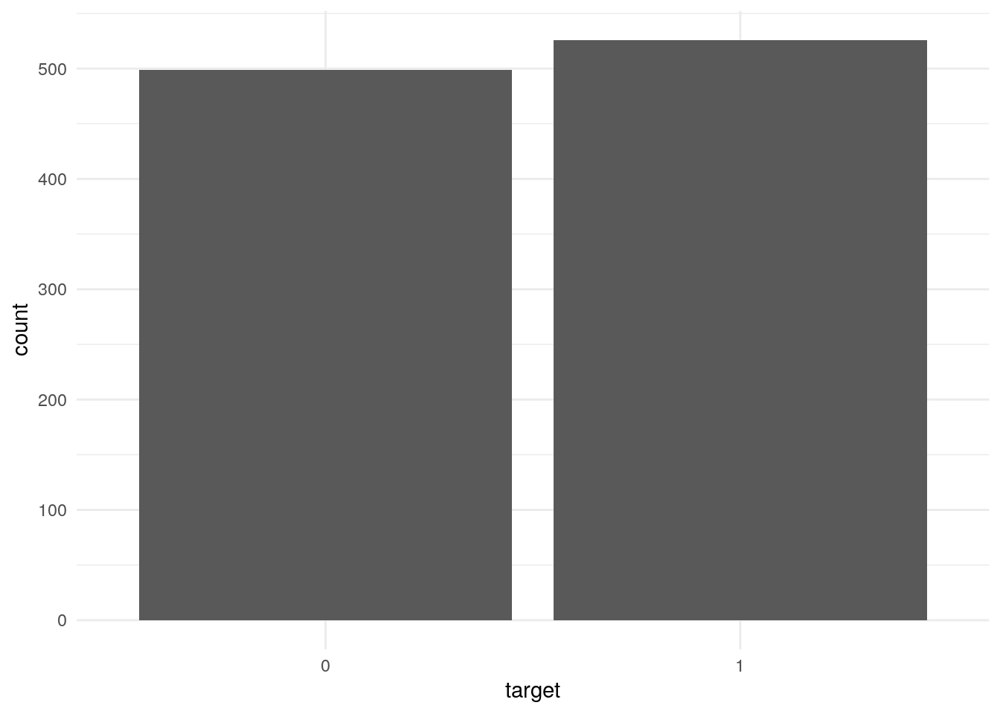
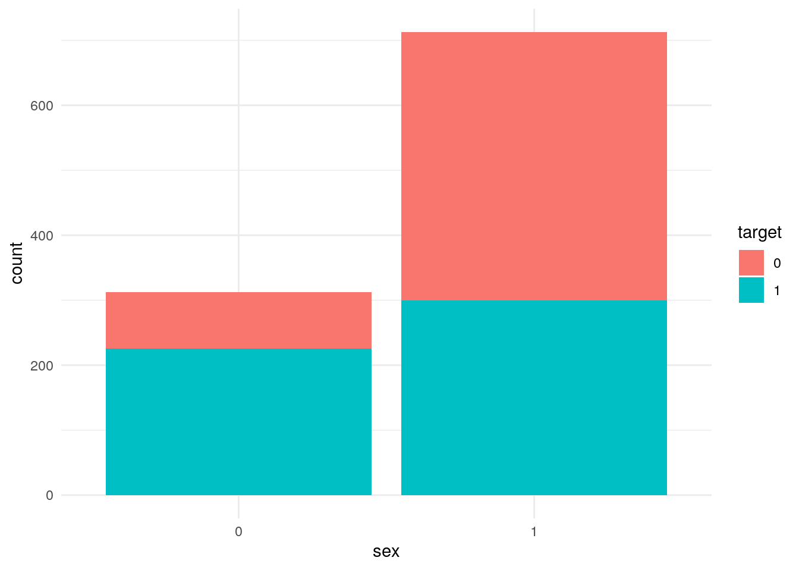
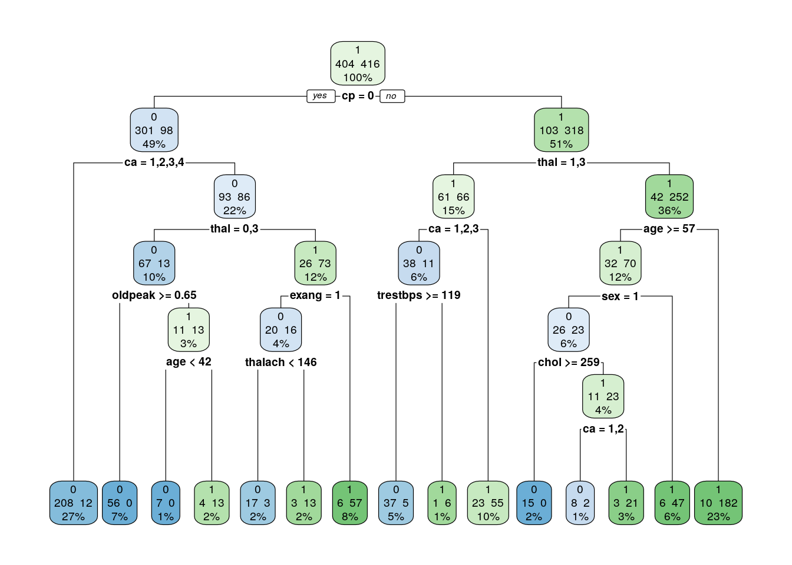

library(ggplot2) # visualização gráfica dos dados
library(rpart) # usado para gerar a arvore de decisão
library(rpart.plot) # plotar a arvore de decisão graficamenteDoenças do coração
Introdução
Projeto para analisar possiveis doenças de coração em pacientes obtidos do conjunto de dados do repositório UC Irvine Machine Learning. Nesta apresentação trazemos uma análise descritiva dos dados e na parte final criaremos um modelo capaz de prever se um paciente tem ou nao uma doença de coração.
Conhecendo os dados
A seguir, importamos os pactoes que serão úteis para realização do projeto
Importando o conjunto de dados
A seguir, importaremo o conjunto de dados diretamente do repositório supracitado
dados = read.csv("heart.csv")Conhecendo a estrutura dos dados
summary(dados) age sex cp trestbps
Min. :29.00 Min. :0.0000 Min. :0.0000 Min. : 94.0
1st Qu.:48.00 1st Qu.:0.0000 1st Qu.:0.0000 1st Qu.:120.0
Median :56.00 Median :1.0000 Median :1.0000 Median :130.0
Mean :54.43 Mean :0.6956 Mean :0.9424 Mean :131.6
3rd Qu.:61.00 3rd Qu.:1.0000 3rd Qu.:2.0000 3rd Qu.:140.0
Max. :77.00 Max. :1.0000 Max. :3.0000 Max. :200.0
chol fbs restecg thalach
Min. :126 Min. :0.0000 Min. :0.0000 Min. : 71.0
1st Qu.:211 1st Qu.:0.0000 1st Qu.:0.0000 1st Qu.:132.0
Median :240 Median :0.0000 Median :1.0000 Median :152.0
Mean :246 Mean :0.1493 Mean :0.5298 Mean :149.1
3rd Qu.:275 3rd Qu.:0.0000 3rd Qu.:1.0000 3rd Qu.:166.0
Max. :564 Max. :1.0000 Max. :2.0000 Max. :202.0
exang oldpeak slope ca
Min. :0.0000 Min. :0.000 Min. :0.000 Min. :0.0000
1st Qu.:0.0000 1st Qu.:0.000 1st Qu.:1.000 1st Qu.:0.0000
Median :0.0000 Median :0.800 Median :1.000 Median :0.0000
Mean :0.3366 Mean :1.072 Mean :1.385 Mean :0.7541
3rd Qu.:1.0000 3rd Qu.:1.800 3rd Qu.:2.000 3rd Qu.:1.0000
Max. :1.0000 Max. :6.200 Max. :2.000 Max. :4.0000
thal target
Min. :0.000 Min. :0.0000
1st Qu.:2.000 1st Qu.:0.0000
Median :2.000 Median :1.0000
Mean :2.324 Mean :0.5132
3rd Qu.:3.000 3rd Qu.:1.0000
Max. :3.000 Max. :1.0000 Algumas variaveis não estão categorizadas, aqui vamos transforma-las em variaveis categoricas
# lapply aplica uma função a varios itens do vetor ao mesmo tempo · neste caso aplicando factor nas colunas selecionadas
dados[,c(2,3,6,7,9,11,12,13,14)] = lapply(dados[,c(2,3,6,7,9,11,12,13,14)], factor)Estrutura dos dados parseados
summary(dados) age sex cp trestbps chol fbs restecg
Min. :29.00 0:312 0:497 Min. : 94.0 Min. :126 0:872 0:497
1st Qu.:48.00 1:713 1:167 1st Qu.:120.0 1st Qu.:211 1:153 1:513
Median :56.00 2:284 Median :130.0 Median :240 2: 15
Mean :54.43 3: 77 Mean :131.6 Mean :246
3rd Qu.:61.00 3rd Qu.:140.0 3rd Qu.:275
Max. :77.00 Max. :200.0 Max. :564
thalach exang oldpeak slope ca thal target
Min. : 71.0 0:680 Min. :0.000 0: 74 0:578 0: 7 0:499
1st Qu.:132.0 1:345 1st Qu.:0.000 1:482 1:226 1: 64 1:526
Median :152.0 Median :0.800 2:469 2:134 2:544
Mean :149.1 Mean :1.072 3: 69 3:410
3rd Qu.:166.0 3rd Qu.:1.800 4: 18
Max. :202.0 Max. :6.200 Analizando gráficamente o conjunto de dados
no grafico a seguir vemos que a distribuição de pessoas que possuem e nao possuem doenças de coração esta equilibrada

no grafico a seguir vemos que mulheres possuem mais doença do coração neste conjunto de dados

Criando modelo preditivo (arvore de decisão)
# embaralhar o conjuto de dados
#| fig-align: center
set.seed(123)
dados = dados[sample(nrow(dados)),]
n = round(0.8 * nrow(dados))
treino = dados[1:n, ]
teste = dados[-(1:n),]
arvore.heart = rpart(formula=target~., data=treino)
rpart.plot(arvore.heart, extra=101)
previsao = predict(arvore.heart, newdata=teste, type="class")
#previsao
mean(previsao == teste$target)[1] 0.902439vamos avaliar a precisão do modelo
table(previsao, teste$target)
previsao 0 1
0 80 5
1 15 105